visión por computador · sjk002 · lección 004
Detección de bordes
Derivadas, gradiente, Laplaciano, Marr–Hildreth y Canny.
bloque A
Derivadas de imagen
Derivar es convolucionar, y derivar amplifica el ruido.
definición y usos
Qué es un borde
Un borde es un cambio brusco de intensidad entre regiones vecinas: la frontera de un objeto, una sombra o un cambio de textura.
Matemáticamente: un punto donde la derivada de la imagen tiene módulo grande.
| Aplicación | Para qué sirven los bordes |
|---|---|
| Reconocimiento | forma del objeto, independiente del color |
| Navegación | carriles, obstáculos, horizonte |
| Medicina | contornos de órganos y lesiones |
| Registro | alinear imágenes por su estructura |
| Compresión y SIFT | los bordes concentran la información |
derivar = convolucionar
Derivar es convolucionar
La derivada parcial \(f_x=\partial f/\partial x\) es un operador:
- Lineal: \(\partial(af+bg)=a\,\partial f+b\,\partial g\).
- Invariante al desplazamiento: derivar la imagen desplazada = desplazar la derivada.
Todo sistema LTI es una convolución con su respuesta al impulso, así que existe un núcleo \(h\) con
En frecuencia, derivar multiplica por \(j2\pi u\): el módulo crece con \(|u|\), así que las altas frecuencias (y el ruido) se amplifican.
desarrollo de Taylor · diapositiva 30
Primera derivada discreta
desarrollo de Taylor · segunda derivada
Segunda derivada discreta
Núcleo [1, −2, 1]. Suma 0: en zonas constantes y en rampas la respuesta es 0.
ejemplo numérico · escalón [0,0,0,10,10,10]
Desfase de media muestra
[1, −1] marca el borde en el píxel 3 (f(3)−f(2)): el escalón está entre 2 y 3, media muestra de desfase. [1, 0, −1] es simétrico y centra el borde (sale de valor doble: dividir entre 2).
derivadas 2D · diagonales
Roberts cross
Primer detector 2D (1963): derivadas en las dos diagonales con núcleos 2×2.
Magnitud \(\sqrt{R_1^2+R_2^2}\) o \(|R_1|+|R_2|\).
demostración · diapositiva 13
Derivar duplica el ruido
En frecuencia \(|H(u)|=2\pi|u|\): se amplifican las altas frecuencias, donde domina el ruido.
imagen real · derivada en x con [1, −1]
Derivar amplifica el ruido
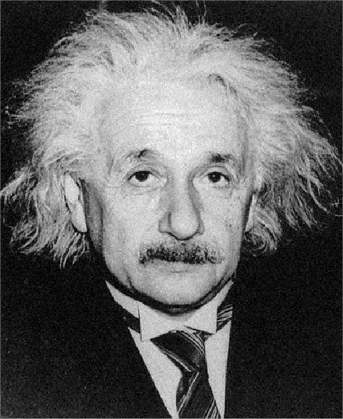
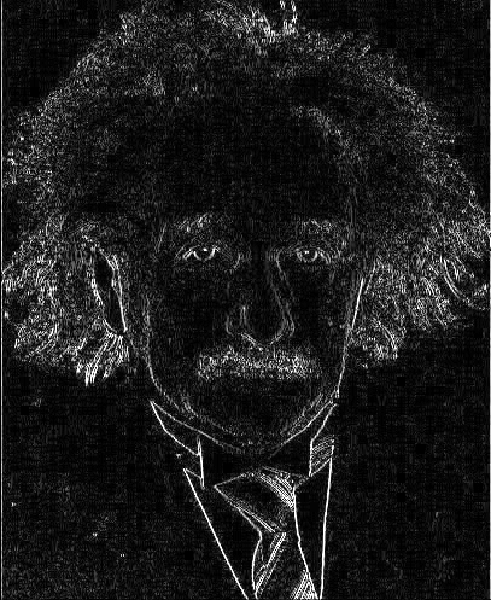
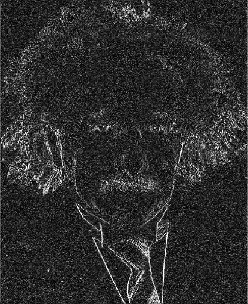
bloque B
Derivada de gaussiana
Suavizar y derivar en una sola convolución; la escala σ.
el truco clave
Derivar la gaussiana
Suavizar y luego derivar equivale a convolucionar una sola vez con la derivada de la gaussiana.
derivación y núcleo 7×7 con sigma = 1
Derivada de la gaussiana
imágenes reales · |gx| con sigma = 1, 2 y 4
Efecto de la escala
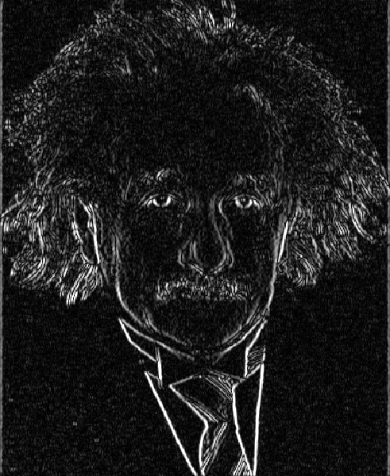
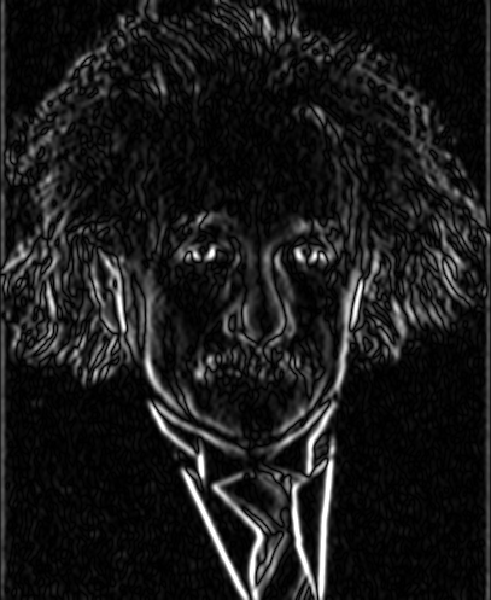
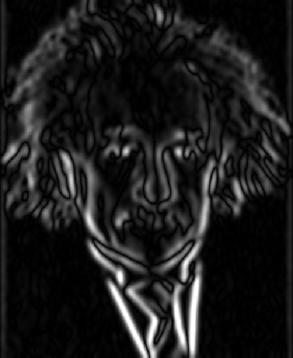
transformada de Fourier de gx
Paso banda en frecuencia
con \(G(u)=e^{-2\pi^2\sigma^2u^2}\) y \(\omega=2\pi u\): módulo \(\omega\,e^{-\omega^2\sigma^2/2}\).
- \(\omega\) anula las bajas frecuencias (la derivada ignora lo constante).
- La gaussiana atenúa las altas (suaviza el ruido).
- Pico en \(\omega=1/\sigma\): σ grande ⇒ banda más baja.
magnitud, orientación y derivada direccional
Gradiente
gx = ndi.sobel(im, 1) # eje 1: columnas (x) gy = ndi.sobel(im, 0) # eje 0: filas (y) mag = np.hypot(gx, gy) ang = np.arctan2(gy, gx)
El gradiente apunta hacia donde la intensidad crece más rápido; el borde es perpendicular a él. La derivada direccional es máxima (\(=M\)) cuando \(\vec u\) sigue al gradiente.
np.arctan2(gy, gx), primero y, luego x.demostración con |gradiente| = 1
Aproximación no isótropa
| ángulo | suma abs. | módulo |
|---|---|---|
| 0° | 1 | 1 |
| 22,5° | 1,31 | 1 |
| 45° | √2 ≈ 1,41 | 1 |
Ahorra raíces cuadradas, pero un borde diagonal sale hasta un 41 % más fuerte: pierde la isotropía.
bloque C
Laplaciano y LoG
Segunda derivada isótropa, cruces por cero y realce.
segunda derivada isótropa
Laplaciano
Es separable en suma, no en producto: \(g=f*h_x+f*h_y\) (dos pasadas 1D que se suman). Un núcleo separable en producto, \(h=a\otimes b\), tiene rango 1; el Laplaciano tiene rango 2.
perfil de un borde suave
Máx. de f′ = cruce de f″
Para \(f(x)=1/(1+e^{-2x})\):
\(f''=0\) cuando \(f=\tfrac12\), justo donde \(f'\) es máxima: el borde está en el cruce por cero de la segunda derivada.
diapositivas 26 y 34–35 · los mismos números de la tabla siguiente
Perfiles: f, f′ y f″
señal ff′ con [1, 0, −1]f″ con [1, −2, 1]
rampa
escalón
tejado
punto
diapositivas 26 y 34–35 · calculado a mano
Cuatro perfiles discretos
| perfil | señal | 1.ª deriv. | 2.ª deriv. |
|---|---|---|---|
| rampa | 1 1 1 2 3 4 5 6 6 6 | 0 1 2 2 2 2 1 0 | 0 1 0 0 0 0 −1 0 |
| escalón | 1 1 1 1 1 6 6 6 6 6 | 0 0 0 5 5 0 0 0 | 0 0 0 5 −5 0 0 0 |
| tejado | 1 1 2 3 4 5 4 3 2 1 | 1 2 2 2 0 −2 −2 −2 | 1 0 0 0 −2 0 0 0 |
| punto | 1 1 1 1 1 6 1 1 1 1 | 0 0 0 5 0 −5 0 0 | 0 0 0 5 −10 5 0 0 |
- Rampa: f′ es constante en toda la rampa (borde grueso); f″ solo marca el principio (+1) y el final (−1).
- Escalón: f″ da el par (+5, −5): doble respuesta, con el cruce por cero entre ambos.
- Punto: f″ responde con (5, −10, 5), mucho más fuerte que f′ (5, 0, −5).
diapositiva 36 · ejercicio
1.ª frente a 2.ª derivada
| n.º | palabra | por qué (con los perfiles de la tabla anterior) |
|---|---|---|
| (1) | thicker (más gruesos) | en una rampa f′ es constante a lo largo de toda ella |
| (2) | stronger (más fuerte) | punto aislado: f″ = (5, −10, 5) frente a f′ = (5, 0, −5) |
| (3) | noise (ruido) | el ruido es un punto aislado: f″ lo amplifica más |
| (4) | step (escalón) | f″ da (+5, −5): doble borde en rampa y escalón |
| (5) | sign (signo) | el cruce + → − o − → + indica claro→oscuro u oscuro→claro |
por qué sigue usándose
Ventajas y desventajas
Laplaciano de la gaussiana (sin normalizar)
Derivación del LoG
aproximación de la diapositiva 54
Núcleo LoG de 5×5
Es el negativo del LoG (centro positivo, solo para mostrarlo: el signo no cambia dónde cruza por cero).
- Suma de pesos = 0: respuesta nula en zonas constantes.
- Tamaño ≈ 6σ (impar) para recoger la cola del sombrero.
- Cruce por cero a distancia \(\sqrt2\,\sigma\) del centro.
sharpening con el Laplaciano
Realce con el Laplaciano
Por linealidad: \(f-\nabla^2f=f*(\delta-\nabla^2)\), un solo núcleo. Se resta (no se suma) porque el centro del Laplaciano es negativo (−4).
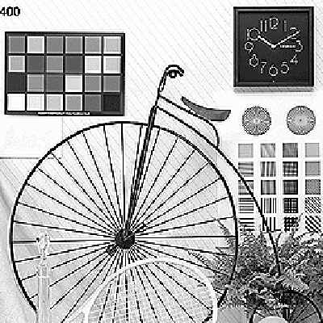
máscara de enfoque
Unsharp masking
\(f-f*G\) es la máscara (detalle de alta frecuencia: paso alto). Se suma, ponderada por \(k\), a la original.
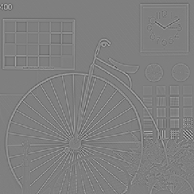
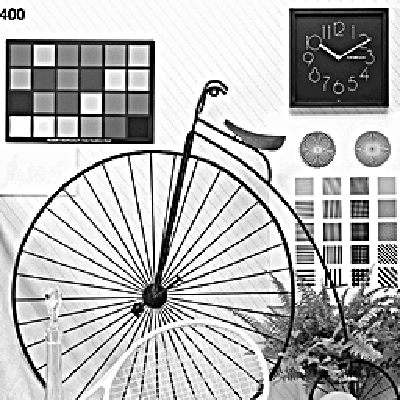
resultados reales · núcleo δ − ∇² aplicado n veces
Realce sucesivo y en color

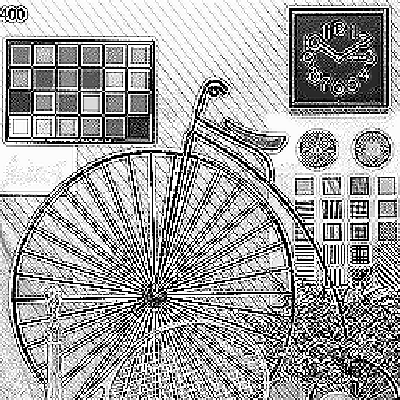
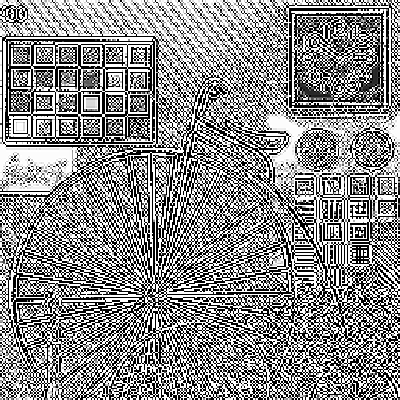

bloque D
Puntos y líneas
Núcleos de suma cero con un umbral sobre la respuesta.
Laplaciano + umbral
Detectar puntos aislados
Pesos suman 0. Si el centro difiere mucho de sus 8 vecinos, \(|R|\) es grande. Imagen de ejemplo con 4 puntos añadidos y ruido σ = 0,01.
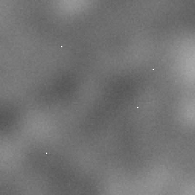
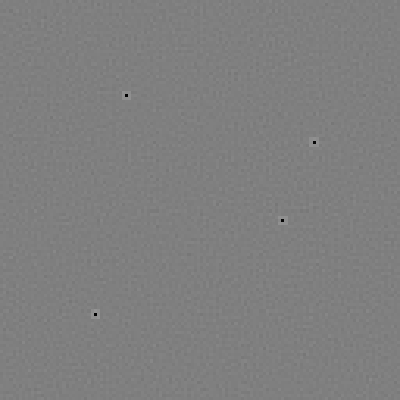
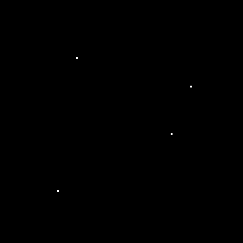
núcleos direccionales · examen, ejercicio 1
Detectar líneas
[[-1,-1,2],[-1,2,-1],[2,-1,-1]] es el detector de líneas a +45°: los 2 están en la diagonal que sube de izquierda a derecha.Los pesos suman 0, así que la respuesta es 0 en zonas constantes. La respuesta es máxima cuando una línea de 1 píxel coincide con la fila de 2. Se toma la máxima de los 4 núcleos y se umbraliza.
cuadros.png · núcleo a +45°
Visualización y doble borde
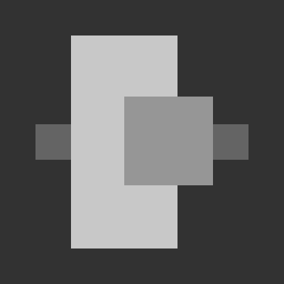
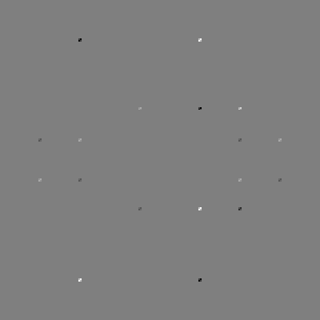
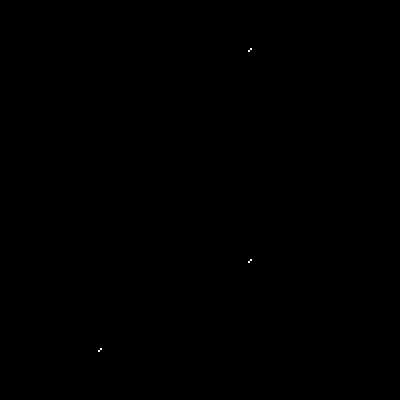
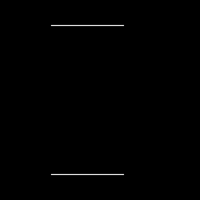
La salida toma valores < 0, 0 y > 0. Se visualiza con \(|R|\) o con \(R>T\). Un borde ancho produce un doble borde (+ y −); una línea de 1 píxel, un solo pico: las líneas salen «finas» respecto al detector.
bloque E
Gradiente y Sobel
Modelos de borde, esquema general y Sobel paso a paso.
rampa de 0 a 100 · derivadas con ruido de sigma = 0,1 · 1 · 10 (sintético)
Rampa y ruido
σ = 0,1
σ = 1
σ = 10
Rampa de pendiente 5 entre x = 20 y 40. Con σ pequeña se ve la meseta de f′ (= 5). Con σ = 10, f′ queda ahogada y f″ (ruido ≈ σ√6) es inservible: la segunda derivada es mucho más sensible al ruido.
detección de bordes basada en gradiente
Esquema general
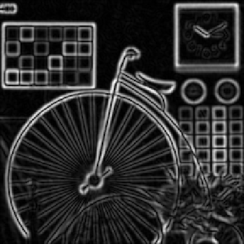
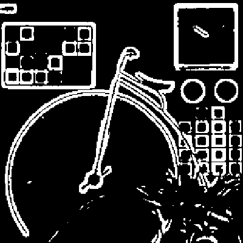
| problema | causa | solución |
|---|---|---|
| bordes gruesos | el gradiente es alto en varios píxeles | supresión de no máximos |
| falsos positivos | ruido que supera el umbral | suavizar, subir el umbral |
| falsos negativos | bordes débiles bajo el umbral | histéresis (dos umbrales) |
gradiente 3×3 con suavizado integrado
Prewitt y Sobel
Sobel = suavizado [1,2,1]ᵀ ⊗ derivada [−1,0,1] (separable: producto exterior). Prewitt usa [1,1,1]ᵀ. Pesos suman 0.
ndi.sobel(im, axis) es una correlación: axis=1 deriva a lo largo de columnas (x), axis=0 a lo largo de filas (y). Sin normalizar (÷8 para pendiente real).bike256 + ruido sigma = 8/255 · diapositivas 49–51 · umbral al 33 % del máx.
Sobel: suavizar o no
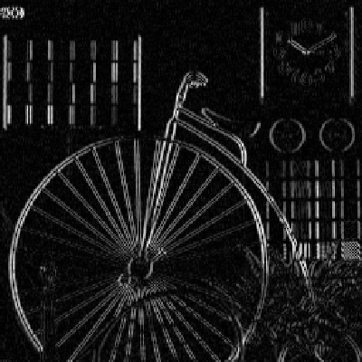
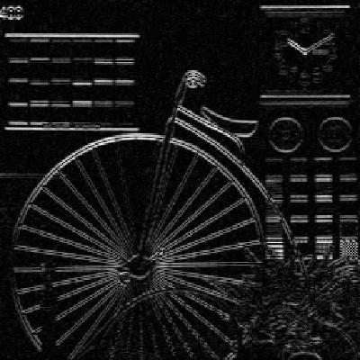
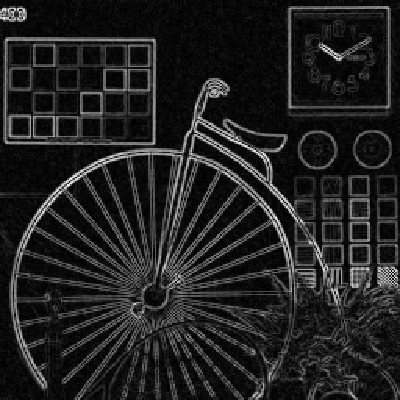
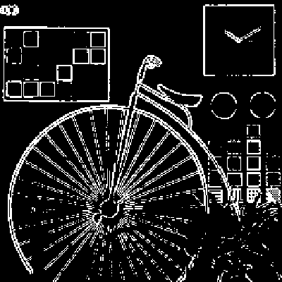
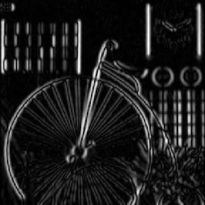
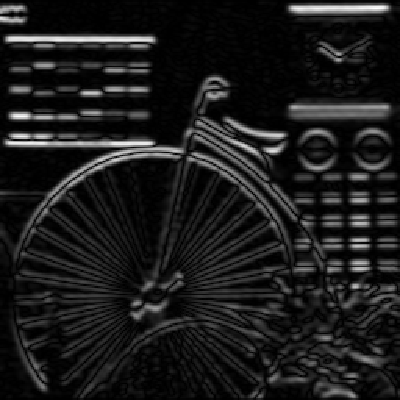
|gx| marca los bordes verticales y |gy| los horizontales. Sin suavizar, el umbral deja salpicaduras de ruido; con suavizado los bordes salen limpios pero más gruesos y se pierden los radios finos.
ejemplo numérico · escalón vertical · correlación
Sobel sobre un escalón
En cada interior: \(g=\sum_{\text{col. der.}}-\sum_{\text{col. izq.}}\). Donde las dos columnas laterales valen 0 y 9: \((1+2+1)\cdot 9-0=36\). El borde sale con 2 píxeles de ancho (0, 36, 36, 0).
bloque F
Marr–Hildreth y Canny
Cruces por cero del LoG frente a gradiente con NMS e histéresis.
LoG + cruces por cero · diapositivas 55–56
Marr–Hildreth
- Filtrar con LoG: σ ≈ 0,5 % de min(H, W), tamaño ≈ 6σ (impar).
- Buscar cruces por cero en cada 3×3: basta un par de vecinos opuestos (izq.-der., arriba-abajo o diagonales).
- Descartar los débiles con un umbral T.
Para un escalón, \(g\) pasa de + a −: \(|g(z_1)-g(z_2)|=2e^{-1/2}\approx1{,}21\), muy por encima de T. Un cruce por ruido tiene un salto pequeño y se descarta.
einstein.pgm · sigma = 2,0 (0,5 % de 407) · umbral relativo a máx. |LoG|
Marr–Hildreth en acción
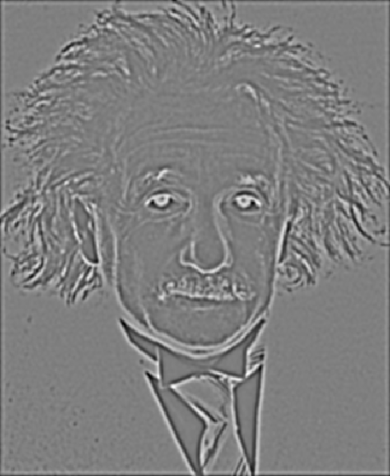
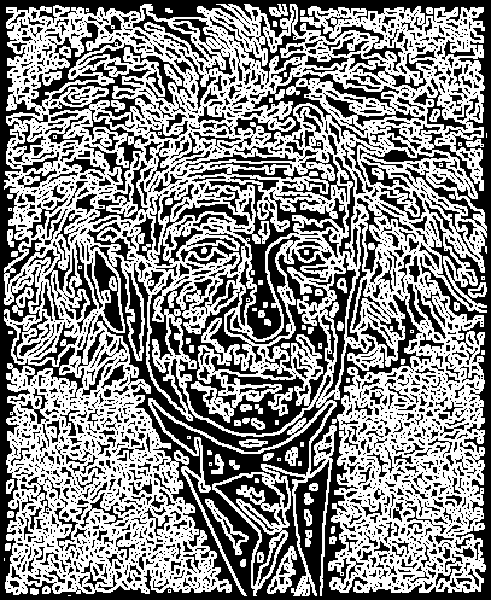
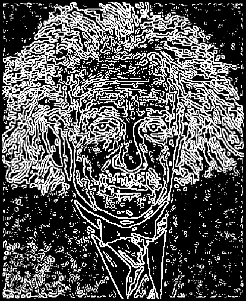
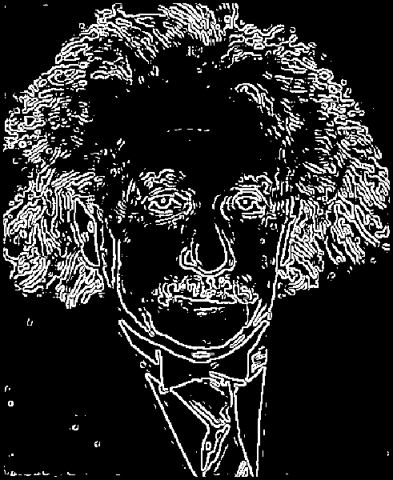
Canny, 1986 · detector óptimo para un escalón con ruido
Canny: tres criterios
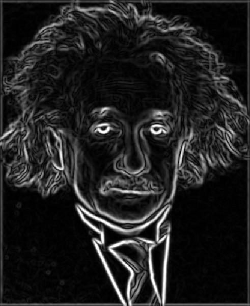
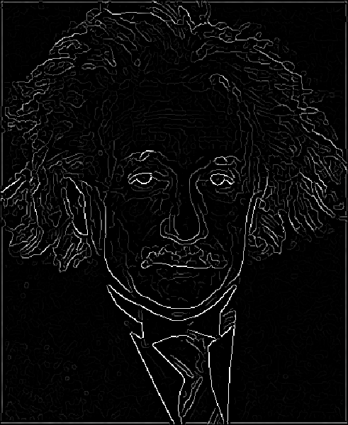
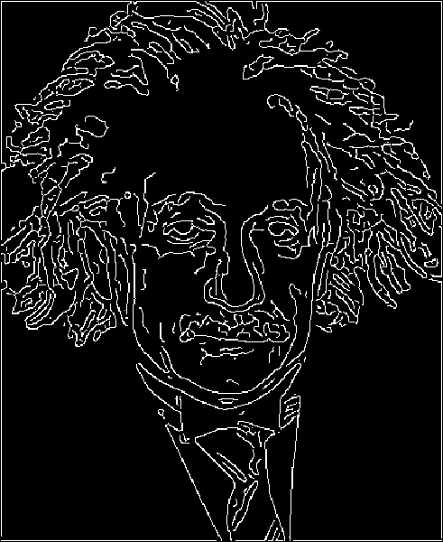
pseudocódigo de la diapositiva 61
Supresión de no máximos
def nms(mag, ang): # ang en grados
d = np.round(ang / 45).astype(int) % 4
step = [(0, 1), (1, 1), (1, 0), (1, -1)]
out = np.zeros_like(mag)
for y in range(1, mag.shape[0] - 1):
for x in range(1, mag.shape[1] - 1):
dy, dx = step[d[y, x]]
if (mag[y, x] >= mag[y + dy, x + dx] and
mag[y, x] >= mag[y - dy, x - dx]):
out[y, x] = mag[y, x]
return out
| x | 0 | 1 | 2 | 3 | 4 | 5 |
|---|---|---|---|---|---|---|
| M | 1 | 3 | 7 | 9 | 8 | 2 |
| ¿máx.? | — | no | no | sí | no | — |
| salida | 0 | 0 | 0 | 9 | 0 | 0 |
Perfil de ejemplo: 7 y 8 superan a sus vecinos de fuera, pero no al 9. Solo sobrevive el 9.
umbral con histéresis
Umbral con histéresis
- \(T_{high}\): bordes fuertes (seguros).
- \(T_{low}\): bordes débiles (candidatos).
- Un débil se acepta solo si está conectado a un fuerte.
- Razón \(T_{high}:T_{low}\) de 2 a 3.
- En la gráfica: el valle entre umbrales se acepta (sigue conectado); donde baja de \(T_{low}\), el contorno se corta.
strong = mag >= T_high
weak = (mag >= T_low) & ~strong
# componentes conexas (8-vecindad)
lab, n = ndi.label(strong | weak,
structure=np.ones((3, 3)))
# etiquetas de las regiones que tocan un fuerte
keep = np.unique(lab[strong])
edges = np.isin(lab, keep[keep > 0])
einstein.pgm · sigma = 1,5 · Tlow = 0,05, Thigh = 0,15
Histéresis en acción
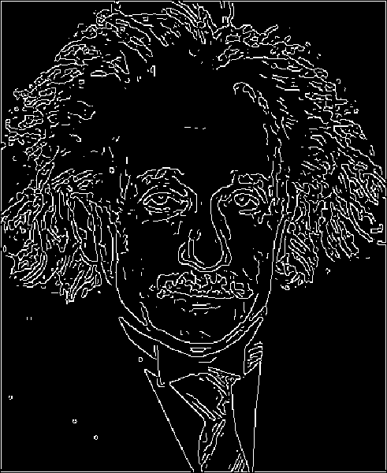
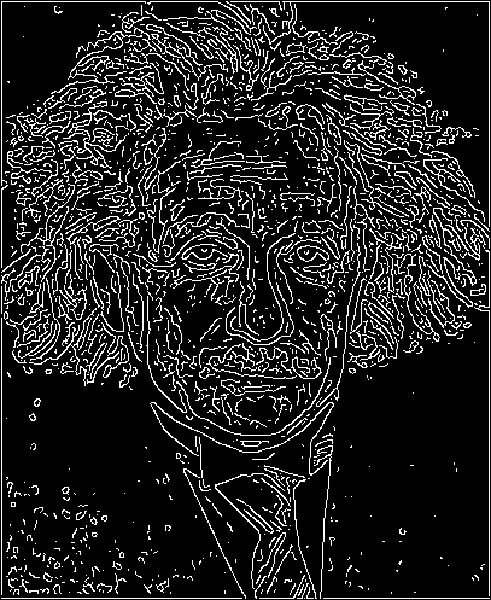
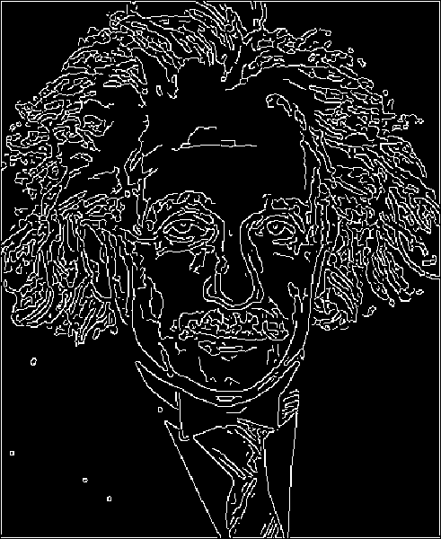
ficha de función · laboratorio 4
canny en scikit-image
| image | matriz 2D en gris |
| sigma | σ de la gaussiana (1,0 por defecto) |
| low/high_threshold | umbrales de histéresis, en las mismas unidades que la magnitud del gradiente |
| use_quantiles | si True, los umbrales son cuantiles en [0, 1] |
| mask | solo calcula dentro de la máscara |
| devuelve | matriz booleana (True = borde) |
edges = feature.canny(im, sigma=2,
low_threshold=0.05,
high_threshold=0.15)
out = edges.astype(np.uint8) * 255
0.2*255 y 0.25*255 porque su imagen es float en 0–255.bike256 · prepara el ejercicio 2 del lab 4
Sigma y umbrales en Canny
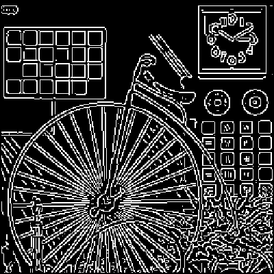
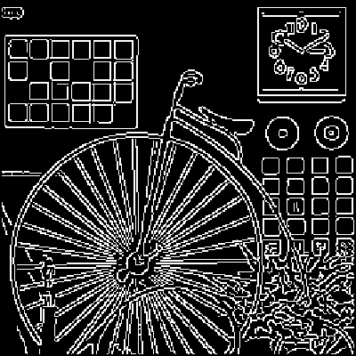
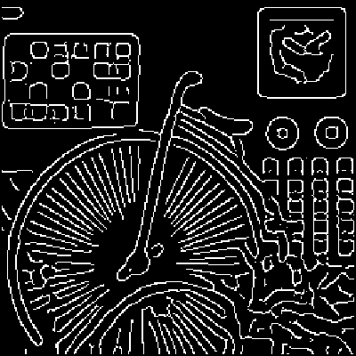
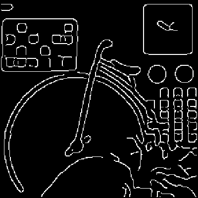
bloque G
Cierre
Código de memoria, chuleta de núcleos y V/F.
escribir de memoria
Sobel y cruces por cero
def sobelEdges(im, frac=0.33):
kx = np.array([[-1, 0, 1],
[-2, 0, 2],
[-1, 0, 1]])
gx = ndi.correlate(im, kx) # x
gy = ndi.correlate(im, kx.T) # y
mag = np.hypot(gx, gy)
return mag > frac * mag.max()
# uso
E = sobelEdges(im) # booleana
def zeroCross(g, T):
out = np.zeros(g.shape, bool)
for dy, dx in [(0,1), (1,0), (1,1), (1,-1)]:
a = np.roll(g, (dy, dx), (0, 1))
b = np.roll(g, (-dy, -dx), (0, 1))
out |= (a * b < 0) & (np.abs(a - b) > T)
return out
# Marr–Hildreth con los valores de la lección
s = 0.005 * min(im.shape)
L = ndi.gaussian_laplace(im, s)
E = zeroCross(L, 0.04 * np.abs(L).max())
todo en una diapositiva
Chuleta de núcleos
verdadero o falso
V/F de práctica
| afirmación | V/F | por qué |
|---|---|---|
| La derivada amplifica el ruido | verdadero | Var(n₁−n₂) = 2σ²; \(|H|\propto|u|\) |
| El Laplaciano es isótropo | verdadero | mismo valor al girar la imagen |
| |gx| + |gy| es isótropo | falso | vale √2 a 45° frente a 1 a 0° |
| Sobel incluye suavizado | verdadero | [1,2,1]ᵀ ⊗ [−1,0,1] |
| La histéresis usa un único umbral | falso | usa T_low y T_high |
| El cruce por cero del LoG marca el borde | verdadero | máximo de f′ ⇔ cruce por cero de f″ |
| La derivada de gaussiana es un paso banda | verdadero | \(j2\pi u\) quita las bajas; G, las altas |
| Marr–Hildreth da la orientación del borde | falso | solo cruces por cero; Canny sí usa α |